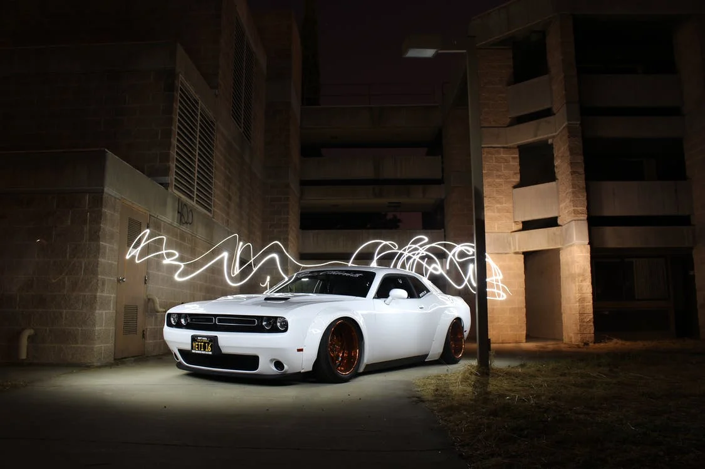

แนวคิดเกี่ยวกับโลกโปเกมอน ทั้งวิดีโอเกมและโลกนิยายของโปเกมอน เกิดมาจากงานอดิเรกสะสมแมลง ซึ่งซะโตะชิ ทะจิริ กรรมการบริหารบริษัทโปเกมอน
เคยทำเมื่อยังเด็ก ตัวผู้เล่นในเกมถูกกำหนดให้เป็นโปเกมอนเทรนเนอร์ หรือนักฝึกโปเกมอน และมีเป้าหมายสองประการ (ในเกมโปเกมอนส่วนใหญ่) คือ สะสมโปเกมอน
ทุกชนิดในภูมิภาคที่เกมกำหนดเพื่อให้เติมเต็มโปเกเด็กซ์ หรือสมุดภาพโปเกมอนและเพื่อฝึกฝนทีมของโปเกมอนที่พวกเขาจับได้ให้เอาชนะทีมโปเกมอนของนักฝึกโปเกมอน
คนอื่น และกลายเป็นนักฝึกโปเกมอนที่แข็งแกร่งที่สุดเรียกว่า โปเกมอนมาสเตอร์ รูปแบบการสะสม การฝึก และต่อสู้นั้นพบได้ในแฟรนไชส์โปเกมอนทุกเวอร์ชันรวมถึงวิดีโอเกม
ซีรีส์อนิเมะ และมังงะ และโปเกมอนเทรดดิงการ์ดเกม (Pokémon Trading Card Game)
เกมโปเกมอนดั้งเดิมเป็นเกมแนวบทบาทสมมุติ (role-playing games: RPG)
ร่วมกับแนววางแผน และถูกสร้างขึ้นโดยซาโตชิ ทาจิริสำหรับเกมบอย เกมแนวบทบาท
สมมุตินี้และภาคต่อ รีเมค และเวอร์ชันแปลภาษาอังกฤษถือว่า เป็นเกมโปเกมอน
"ภาคหลัก"และเป็นเกมที่แฟนคลับส่วนใหญ่อ้างอิงถึงเมื่อพูดถึง"เกมโปเกมอน"
ลิขสิทธิ์โปเกมอนทั้งหมดที่ตรวจสอบโดยบริษัทโปเกมอนถูกแบ่งหยาบๆออกเป็นเจเนอเรชัน
เจเนอเรชันเหล่านี้เป็นการแบ่งภาคตามลำดับเวลาตามการออกจำหน่ายในทุกๆหลายปี
เมื่อภาคต่ออย่างเป็นทางการของเนื้อเรื่องหลักออกจำหน่ายซึ่งนำเสนอโปเกมอนชนิดใหม่
ตัวละครใหม่ ระบบการเล่นใหม่ ภาคต่อภาคนั้นถือว่าเป็นจุดเริ่มต้นของเจเนอเรชันใหม่
ของแฟรนไชส์ เกมหลักและของเสริมอนิเมะ และเกมสะสมการ์ดก็จะถูกปรับให้ทันสมัย
ด้วยคุณลักษณะใหม่ในแต่ละครั้งที่เจเนอเรชันใหม่เริ่มขึ้นแฟรนไชส์โปเกมอนได้เริ่มต้น
เจเนอเรชันที่ห้าเมื่อวันที่ 18 กันยายน ค.ศ. 2010 ในประเทศญี่ปุ่น
💥 ไปจับโปรเกมอนกันเลย!!!

นภสร วีระยุทธวิไล หรือ ปุยเมฆ เกิดเมื่อวันที่ 20 มกราคม พ.ศ. 2540 เป็นบุตรสาวคนเดียวของครอบครัว ปัจจุบันเป็นศิลปินสังกัด GMM Grammy ภายใต้การดูแลของค่าย GMMTV ปุยเมฆเกิดและเติบโตที่ กรุงเทพมหานคร จบชั้นอนุบาลศึกษา ประถมศึกษา และมัธยมศึกษาจากที่ โรงเรียนราชินี จบการศึกษาระดับปริญญาตรีคณะแพทยศาสตร์ วิทยาลัยแพทยศาสตร์ มหาวิทยาลัยรังสิต